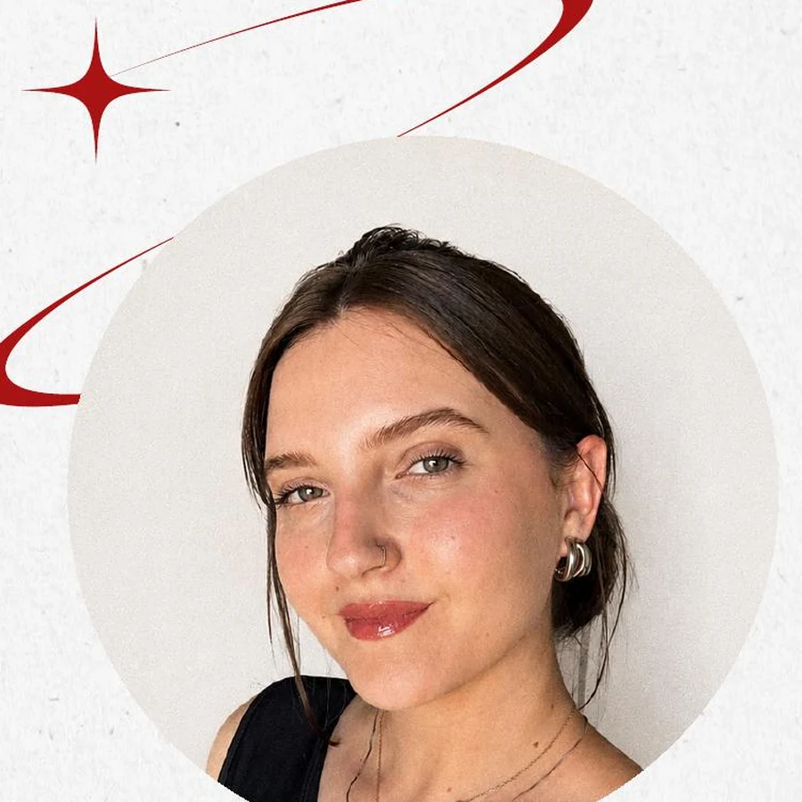
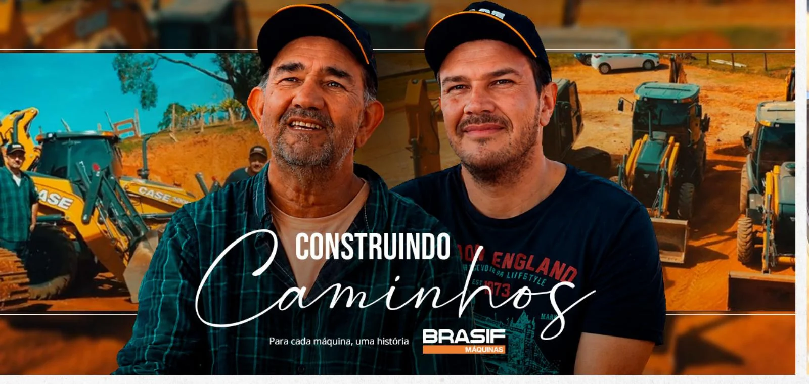
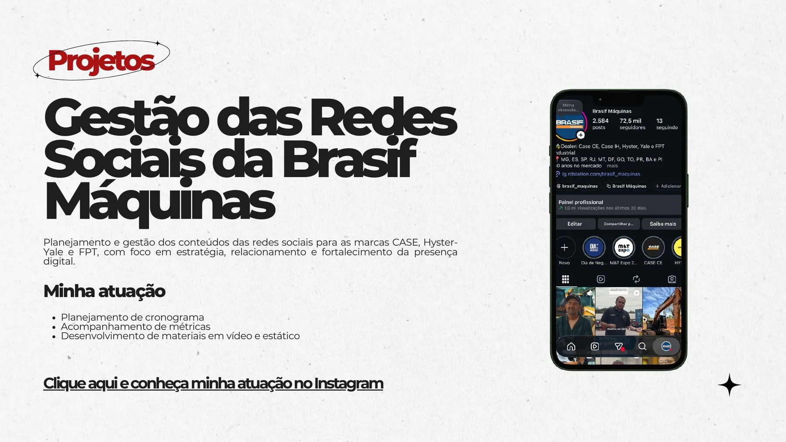
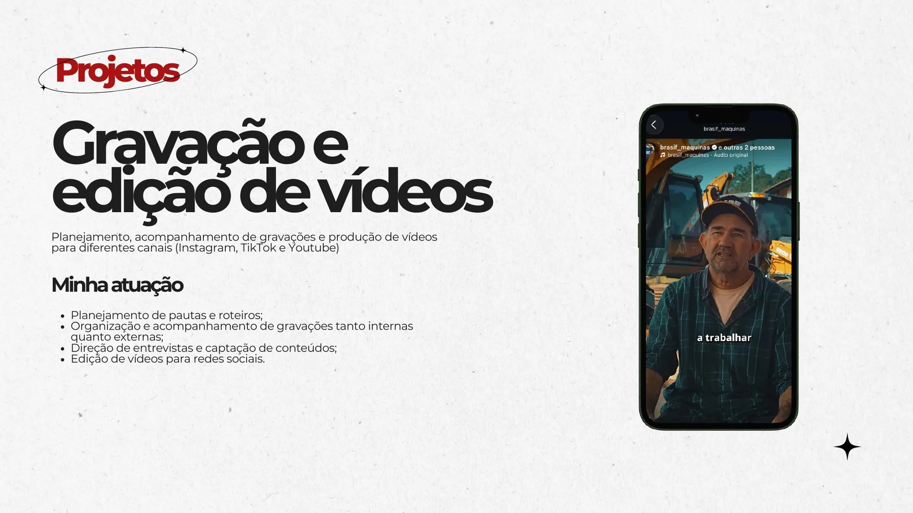
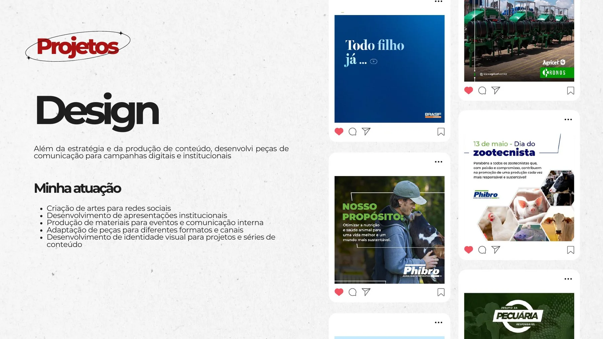
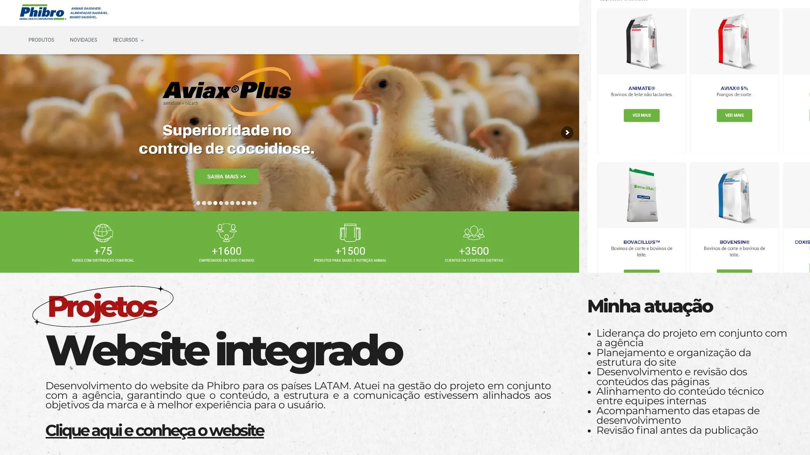

Estratégia & Campanhas
Planejamento de ações, construção de briefing, organização de cronogramas e alinhamento das entregas com os objetivos da marca.
Sou Maria Emília, analista de marketing. Trabalho com campanhas, conteúdo, redes sociais e projetos em que estratégia e criatividade precisam andar juntas.

Minha formação é em Engenharia Agrícola, mas foi no marketing que encontrei um trabalho que combina com o meu jeito de pensar e criar.
Hoje atuo com campanhas, conteúdo, redes sociais e projetos de comunicação. Gosto de entender o contexto, organizar as ideias e transformar tudo isso em uma entrega clara, bonita e que faça sentido para quem está do outro lado.
Minha experiência passa por planejamento, produção de conteúdo, audiovisual, design e gestão de projetos. Em cada trabalho, busco equilibrar repertório visual, organização e visão de negócio.
Uma base que trouxe organização, pensamento analítico e visão de processo para a minha forma de trabalhar.
Foi na comunicação que encontrei espaço para unir estratégia, criatividade e relacionamento com diferentes públicos.
Atuação no setor de máquinas para construção, acompanhando iniciativas de marca do planejamento à publicação.
Aprofundamento em posicionamento, comportamento do consumidor, comunicação e resultados.
Meu trabalho costuma passar por várias etapas. Gosto de participar da construção, organizar o processo e acompanhar a entrega de perto.
Planejamento de ações, construção de briefing, organização de cronogramas e alinhamento das entregas com os objetivos da marca.
Pautas, roteiros, gravações, entrevistas, cobertura de eventos, acompanhamento de edição e conteúdo para diferentes canais.
Gestão de redes sociais, acompanhamento de desempenho, organização de calendário e produção de materiais estáticos e em vídeo.
Peças para campanhas, apresentações, eventos, comunicação interna e adaptação de materiais para diferentes formatos.
Uma série feita para contar histórias reais de clientes. Participei do contato inicial, do briefing, das gravações em campo, das entrevistas e do acompanhamento da edição.


Planejamento e gestão de conteúdo para CASE, Hyster-Yale e FPT, com acompanhamento de cronograma, desempenho e produção de materiais.

Participação no processo completo: pauta, roteiro, gravações, direção de entrevistas, captação e acompanhamento da edição.

Criação e adaptação de materiais para redes sociais, campanhas digitais, apresentações, eventos e comunicação interna.

Gestão do projeto com a agência, organização da estrutura, revisão de conteúdo e alinhamento entre equipes até a publicação.
Esta é uma seleção dos projetos principais. O PDF reúne mais contexto sobre a atuação e as entregas de cada trabalho.
Abrir portfólio em PDFAntes de criar, procuro entender o objetivo, o público, os limites do projeto e o que realmente precisa ser resolvido.
Estruturo o briefing, separo referências, alinho responsabilidades e transformo o pedido em um caminho de trabalho mais claro.
Participo da produção, acompanho fornecedores e equipes, reviso materiais e mantenho o projeto andando até a entrega.
Depois da publicação, olho para o resultado, os aprendizados e os pontos que podem deixar o próximo projeto ainda melhor.
Algumas ferramentas entram na criação. Outras ajudam a organizar, acompanhar e dar consistência ao trabalho.
Gosto de projetos que pedem organização, repertório e vontade de construir algo bem feito. Se fizer sentido para você, vamos conversar.